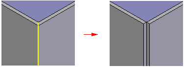
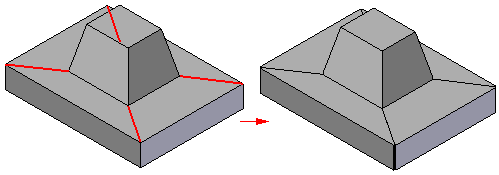
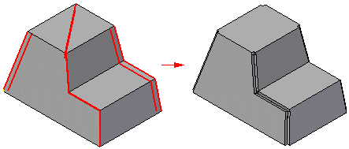

Rip Corner command
Use the Rip Corner command to rip the edge of a model or curve, producing two new faces. This creates a gap in the model. Separating the faces is necessary to convert many imported models and models created with part features, such as a thin-walled protrusion. The gap created between the faces is the minimum modeling tolerance required to prevent face merging.

The new faces created by the rip are always perpendicular to the ripped face. The rip feature is associative to its parent geometry.
When creating a rip feature, you can rip along:
-
an edge or set of edges,

-
or a curve.

When ripping along edges, you can select a multiple set of edges and edge chains to define the corner(s) to rip. A valid rip corner consists of an endpoint-connected set of edges. In the select set, there can be up to three edges connected to a single vertex. A corner is further defined by its inside or outside edge pairing. To be valid, there must be two pairs of edges to define the corner and the pairs cannot have a common face. The start and end vertexes of each pair must share a common face at only one end. For a single corner to be valid, the start and end vertex for the edge must be connected to three edges only.
When ripping along curves, the curve you select creates a channel in the solid and tears the corner between three bend faces. Curves must be linear and lie completely on a flat face.
The command supports valid imprinted edges and faces as input.
How do I
Convert a part to sheet metalOverride the corner treatment
Override the bend values
Transform a document to a synchronous sheet metal part
Transform a sheet metal part
Rip a corner of a sheet metal part
Learn more
Converting part documents to sheet metalLook up more details
Part to Sheet Metal commandPart to Sheet Metal Options dialog box
Thin Part to Synchronous Sheet Metal command
Thin Part to Synchronous Sheet Metal command bar
Thin Part to Sheet Metal command
Thin Part to Sheet Metal command bar
Thin Part to Sheet Metal Options dialog box
Rip Corner command bar